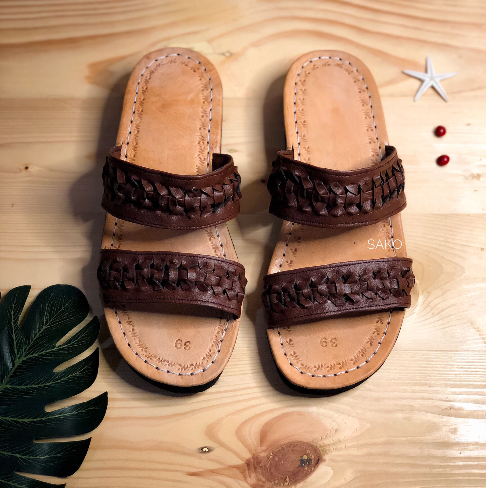

Selop Mogi II Coklat Tua
Selop Mogi II Coklat Tua adalah sandal model Bali yang elegan dan nyaman. Sandal ini dirancang dengan bahan berkualitas tinggi dan desain yang menarik. Warna coklat tua memberikan kesan klasik dan mudah dipadukan dengan berbagai pakaian. Sandal ini cocok digunakan untuk berbagai kesempatan, baik formal maupun santai. Dengan desain yang ergonomis, Selop Mogi II memberikan kenyamanan maksimal saat digunakan sepanjang hari.
